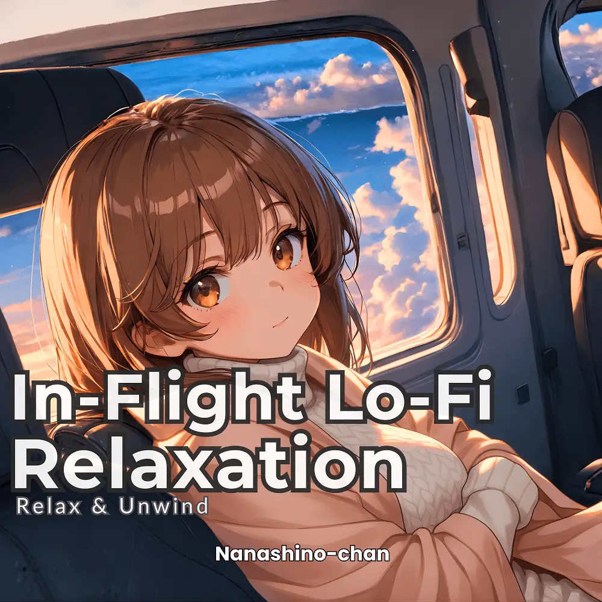

Lo-Fi · Jazz · Instrumental
In-Flight Lo-Fi Relaxation:Relax & Unwind
Nanashino-chan
Explore In-Flight Lo-Fi Relaxation:Relax & Unwind by Nanashino-chan: 18 instrumental tracks spanning Lo-Fi / Jazz / Instrumental. Start with A Moment of Calm / Calm Lo-Fi Melodies, preview the collection and find your favorites on streaming services.
2025-02-06 · Released · 18 tracks · Instrumental
Preview the album
The jacket stays here until you choose a track. Playback uses YouTube.
YOUTUBE PREVIEW
Choose a track to listen
The jacket stays here until you choose a track. Playback uses YouTube.
If playback is unavailable, open the album or track on the streaming service.
Find this album on streaming services
Links marked “search” open search results. Select the album or track on the service.
Track list 18
- 01A Moment of Calm
- 02Calm Lo-Fi Melodies
- 03Deep Relaxation
- 04Echoes of Relaxation
- 05Expansive Soundscapes
- 06Laid-Back Jazz
- 07Mellow Reflections
- 08Piano & Sax Bliss
- 09Quiet Flow
- 10Relax & Unwind
- 11Relaxing Beats & Sax
- 12Saxophone Serenade
- 13Saxophone Soothing
- 14Serenity Unleashed
- 15Soft Beginnings
- 16Soft Jazz Echoes
- 17Soft Jazz Tones
- 18Soft Piano & Sax
Find a sound for your next post
Copy “Nanashino-chan + track title” and paste it into your social app’s music search. Availability depends on your region and account. Copying the name does not grant usage rights.